✦0 публикаций на старте✦2 345 подписчиков✦714 712 просмотров за 90 дней✦топ-ролик 157 530✦80,1% аудитории — мужчины✦входящие запросы по бизнесу✦верификация за месяц✦90 публикаций✦0 публикаций на старте✦2 345 подписчиков✦714 712 просмотров за 90 дней✦топ-ролик 157 530✦80,1% аудитории — мужчины✦входящие запросы по бизнесу✦верификация за месяц✦90 публикаций
Я Малик Хашимов — продюсер блогов. 100+ проектов: медийные личности, предприниматели, лидеры рынка.
С Георгием начали с пустого профиля: ноль публикаций, ноль подписчиков, нулевой опыт в кадре.
За три месяца — 2 345 подписчиков, 714 712 просмотров и запросы на подряды, поставки и партнёрство,
которые приходят прямо в директ.
Результат
Точка А → Точка Б
Слева — то, что было на старте. Справа — то, что есть сейчас. Всё подтверждено скриншотами статистики ниже.
1 июля 2026
Публикаций0
Подписчиков0
Просмотров0
Опыт в кадренет
Входящие по бизнесунет
Статус профиляпустой аккаунт
21 сентября 2026
Публикаций90
Подписчиков2 345
Просмотров за 90 дней714 712
Топ-ролик157 530
Входящие по бизнесуподряды, поставки, партнёрство
Статус профиляверифицирован
Аккаунт за 90 дней
Сводка по всему периоду работы
23 июня — 20 сентября 2026, данные из профессиональной панели аккаунта.
714 712
просмотров
+2 333
подписчиков, чистый прирост
90,3%
охвата — неподписчики
29 946
взаимодействий
13 639
посещений профиля
228
переходов по ссылке в шапке
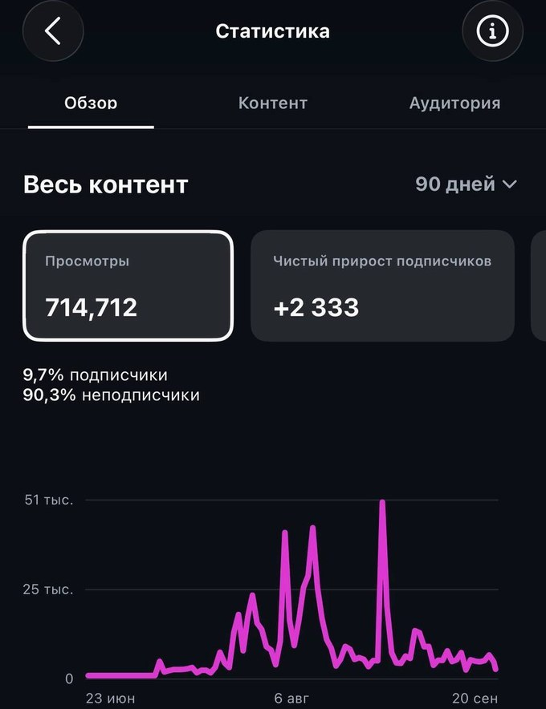
Просмотры и прирост за 90 дней
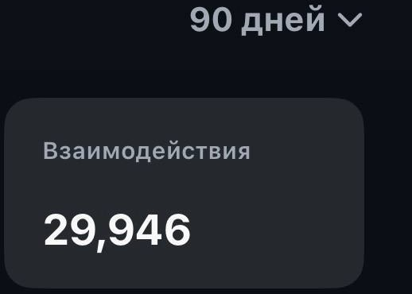
Взаимодействия
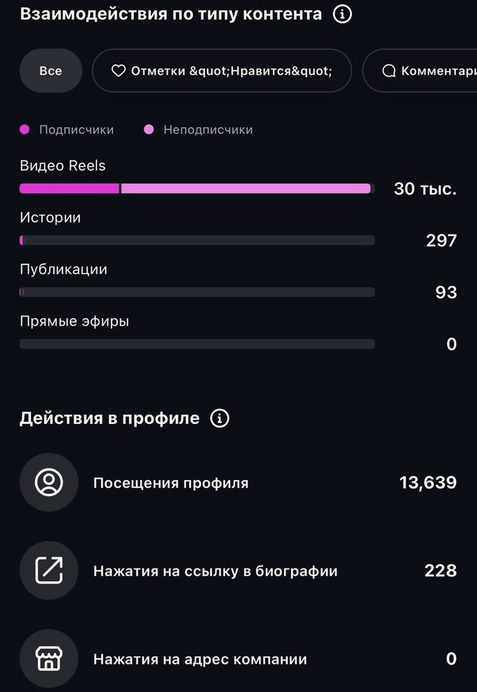
Действия в профиле
90,3% охвата — люди, которые не были подписаны. Блог не крутится внутри своей же аудитории, он каждый день выходит на новых людей.
228 переходов по ссылке в шапке против 16 во втором месяце. Аудитория идёт с блога на сайт компании.
Клиент
Кто такой Георгий
Владелец группы компаний в строительстве: проектная организация, строительная компания, лаборатория.
Проекты по всей стране — от Калининграда до Владивостока. Госконтракты, промышленные объекты, миллиардные обороты.
Задача: личный бренд предпринимателя, а не инфобизнес. Не учим стройке, не продаём курсы — показываем масштаб, процесс и путь.
Сложность: блогерского опыта нет вообще, аккаунт пустой, ниша закрытая — про деньги, подряды и госзаказы в отрасли говорить не принято.
Ограничения: нельзя показывать названия объектов, суммы контрактов, фамилии, схемы работы. Работаем через эмоцию, процесс и масштаб.
Динамика
Как рос блог
Каждая точка — скриншот профиля в этот день. Ни одного рекламного бюджета, весь рост органический.
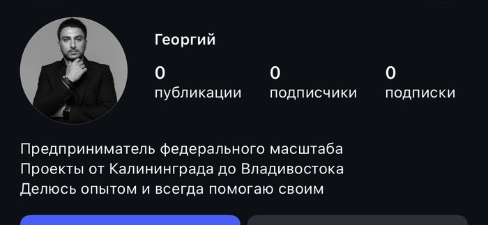
1 июля026 июля222
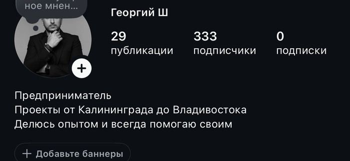
29 июля333
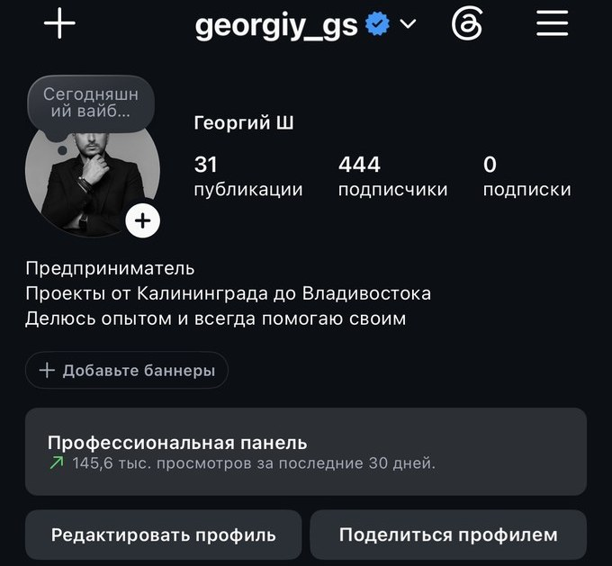
31 июля444
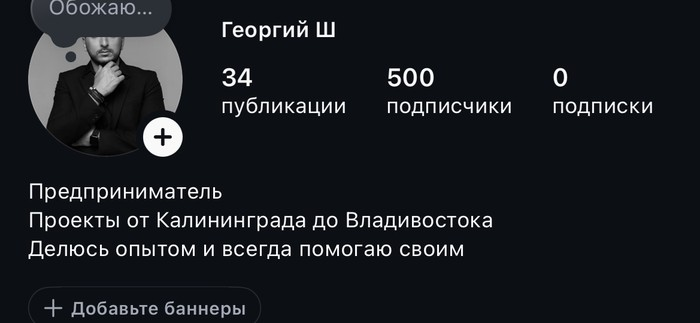
2 августа500
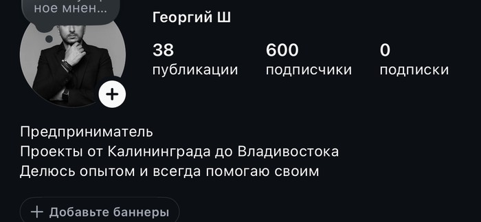
5 августа6005 августа700
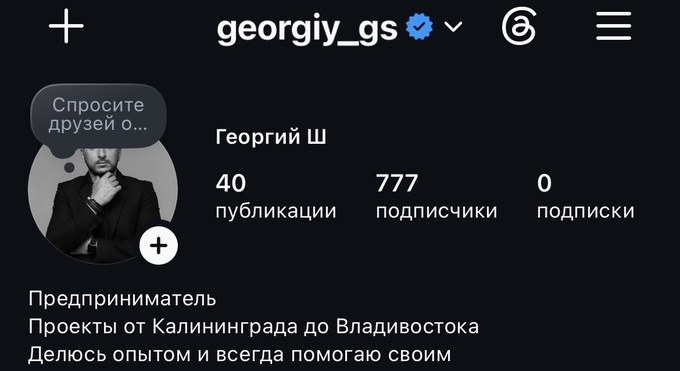
6 августа777
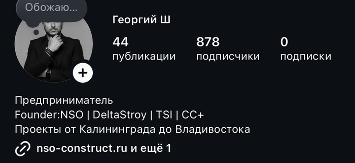
8 августа878
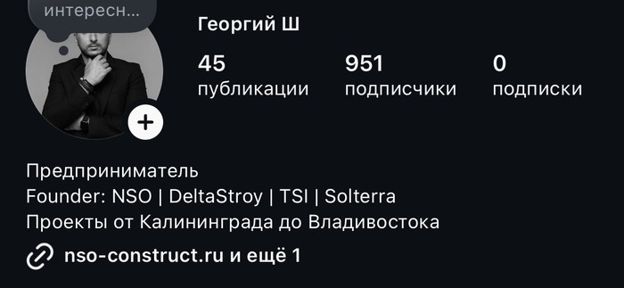
9 августа951
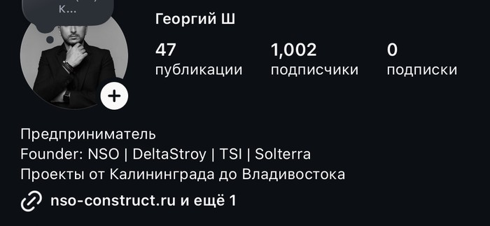
9 августа1 002
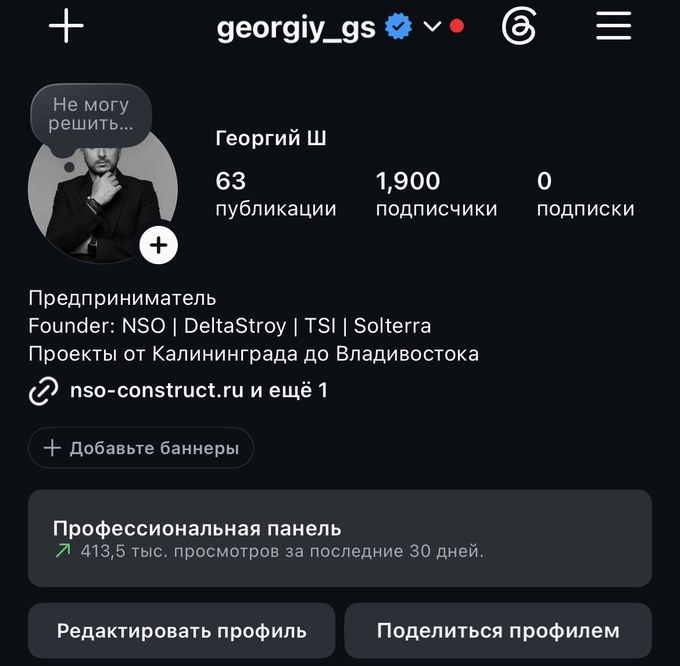
26 августа1 90027 августа2 003
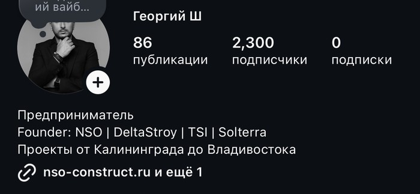
17 сентября2 300
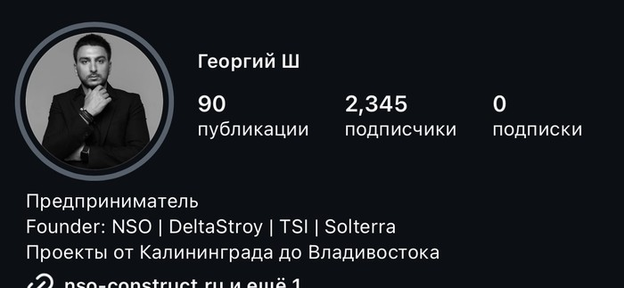
21 сентября2 345
Метод
Это не «снимали рилсы». Это система
Восемь слоёв, без которых следующий не работает. Первый месяц ушёл на фундамент — и именно поэтому второй и третий дали рост.
01
Распаковали личность
Опросник из 11 блоков: бизнес, характер, отношения, спорт, смысл, истории из жизни. На выходе — карта сильных тем, которые есть только у него.
Зачем: без распаковки предприниматель в кадре звучит как любой другой предприниматель.
02
Определили позиционирование
«Строитель федерального масштаба, который сделал себя сам». Через силу, масштаб и образ — не через обучение. Никакого инфобизнеса: не учим стройке и не рассказываем, как заработать.
Зачем: в мужской предпринимательской нише экспертный тон вызывает спор, а образ — уважение.
03
Провели красные линии
Зафиксировали, что не выносим в кадр: названия объектов, суммы контрактов, фамилии, схемы. И что показываем смело: процесс, реальные проблемы, путь, масштаб, команду, закулисье.
Зачем: у клиента бизнес с госзаказом — одна неосторожная фраза дороже любого охвата.
04
Упаковали профиль
Шапка, аватарка, пять рубрик в актуальных: кто я и мой путь, спорт, путешествия, авто, места. Верификация получена в первый же месяц.
Зачем: человек приходит с ролика в профиль и за три секунды решает — подписываться или нет.
05
Построили контент-модель
Каждый ролик решает свою задачу: одни приводят новых, другие удерживают, третьи формируют образ. Темы — из распаковки, а не из трендов.
Зачем: блог без модели даёт случайные всплески, с моделью — накопительный эффект.
06
Нашли рабочие форматы
Съёмка в машине, обход объектов, закадровая озвучка, мини-влоги, честное мнение, сценки, смысловые нарезки. Лучше всего пошли говорящие головы на темы, которые самому откликаются.
Зачем: формат, в котором клиенту комфортно, снимается годами. Формат «через силу» умирает на второй неделе.
07
Поставили производство
Один съёмочный день — банк на 7–10 роликов. Дальше монтаж, согласование, публикация почти каждый день. Клиент не живёт в кадре, а блог выходит стабильно.
Зачем: у предпринимателя с таким объёмом дел нет ресурса снимать ежедневно — и он не должен.
08
Искали флагман и делали серии
Темы про госконтракты дали лучшую раздачу — и мы пошли в них серией. Один ролик этой линии собрал 157 530 просмотров, другой — 62 116.
Зачем: как только формат выстрелил, его нужно повторять, пока алгоритм даёт охват. Это и есть разница между системой и везением.
Хронология
Три месяца по месяцам
11 июня — 10 июля · фундамент
Первый месяц: запуск с нуля
7 287просмотров
96подписчиков
88%новая аудитория
Распаковка, стратегия, упаковка профиля, первая съёмка. Первый ролик вышел 7 июля. Флагман месяца — влог «Один день из моей жизни»: 4 240 просмотров и 67 подписчиков с одного ролика, то есть две трети всей базы за месяц. Верификация аккаунта получена 6 июля.
10 июля — 9 августа · ритм
Второй месяц: ×37 по просмотрам
270 279просмотров
+841подписчиков
1 002в базе к 9 августа
Вышли на почти ежедневный ритм — 48 роликов за месяц. Появилась линия про госконтракты: ролик «Ты выиграл госконтракт на 500 млн» собрал 50 187 просмотров и привёл 293 подписчика — к сентябрю уже 413. 92,6% охвата — неподписчики, 117 192 человека увидели блог впервые.
10 августа — 9 сентября · масштаб
Третий месяц: рекорд проекта
363 639просмотров
+1 208подписчиков
2 284в базе к 15 сентября
33 новых ролика, +35% к просмотрам и +44% к приросту относительно второго месяца. Одновременно ролики прошлого месяца ушли в долгий хвост: «Лайфхаки в работе с госконтрактами» выросли с 15 630 до 157 530 просмотров — в десять раз после публикации.
21 сентября · сейчас
2 345 подписчиков, 90 публикаций
Блог продолжает расти, топ-ролики набирают без новых вложений, в директ приходят запросы по бизнесу.
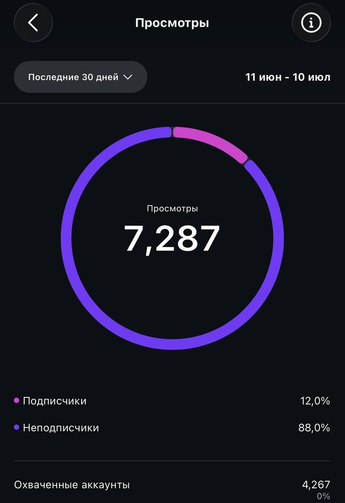
1-й месяц · 7 287
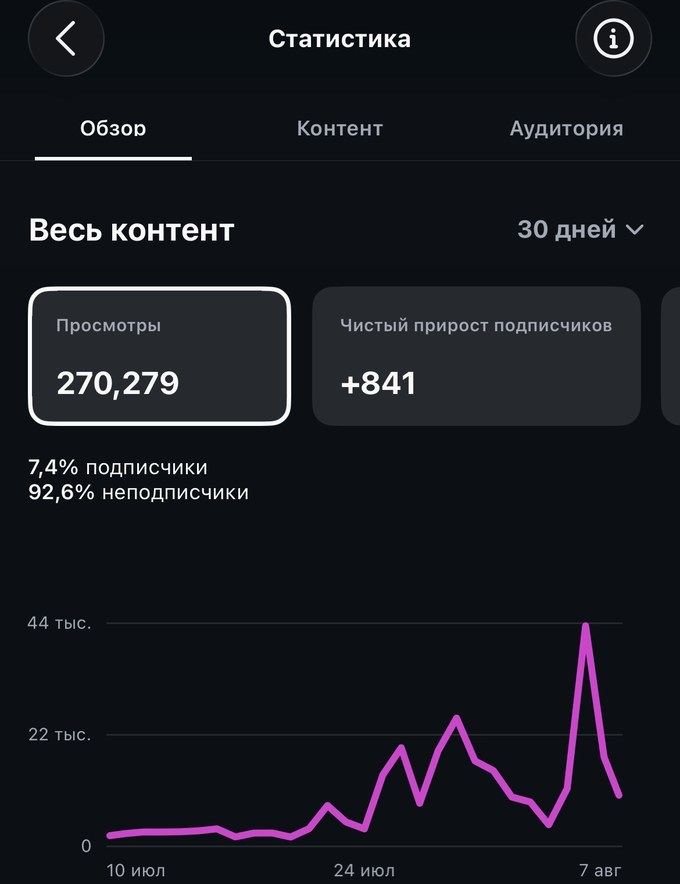
2-й месяц · 270 279
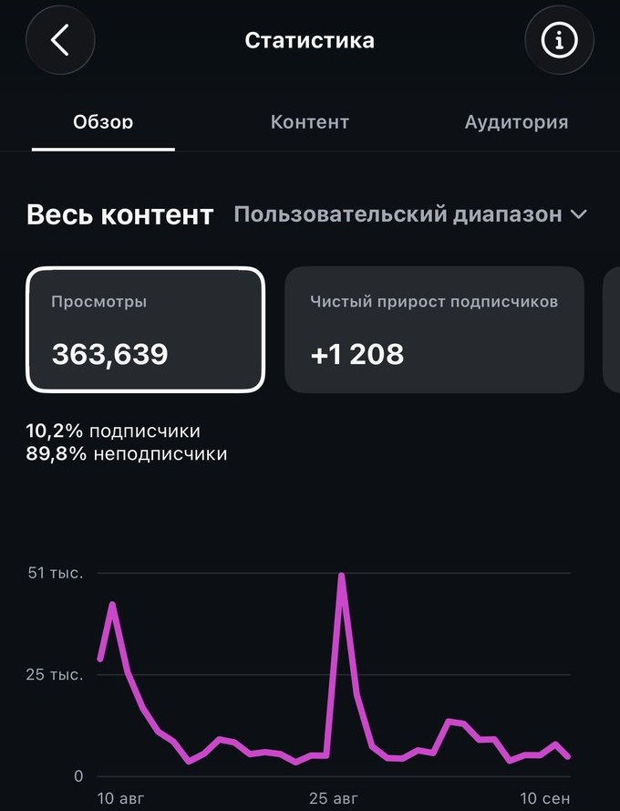
3-й месяц · 363 639
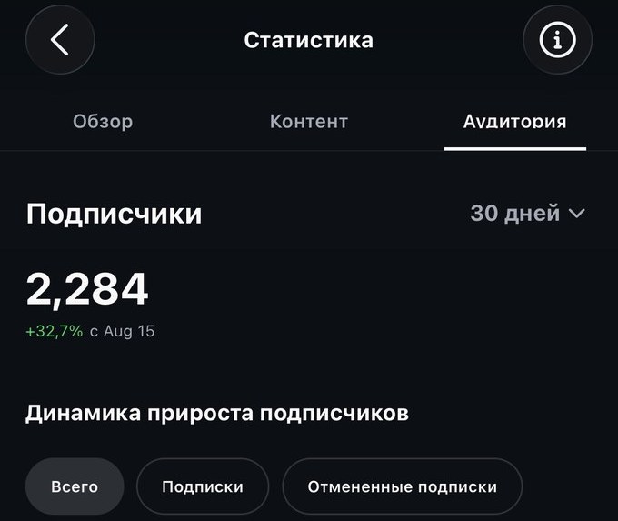
Подписчики аккаунта
Хиты
Ролики, которые вынесли блог
Все цифры — из статистики Reels, снятой 15 сентября.
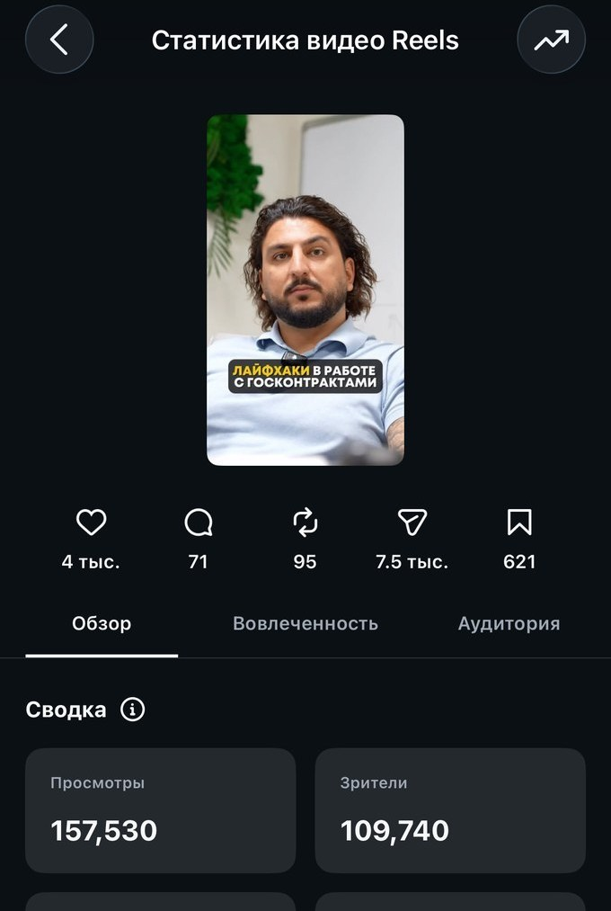
★ Рекорд проекта
«Лайфхаки в работе с госконтрактами»
157 530 просмотров
109 740 человек охвачено
7,5 тыс. отправок в сообщениях
621 сохранение
Был 15 630 — вырос в 10 раз
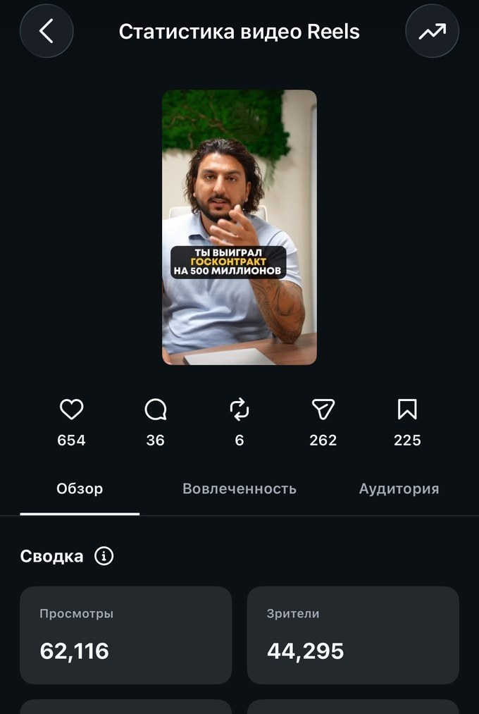
Лучший по вовлечению
«Ты выиграл госконтракт на 500 млн»
62 116 просмотров
44 295 человек охвачено
+413 подписчиков с одного ролика
48 секунд среднее время просмотра
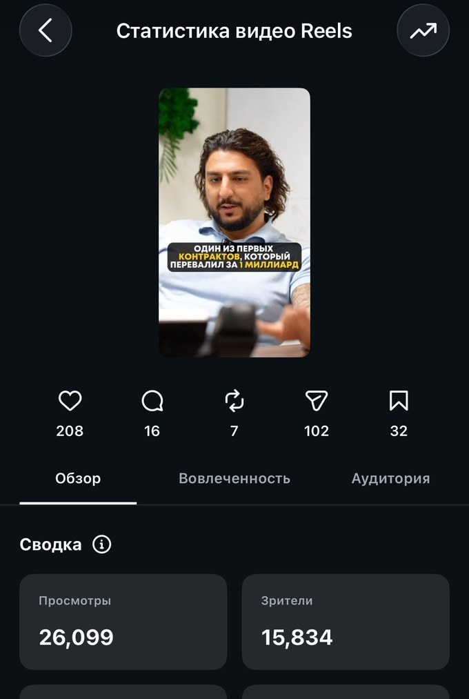
Долгий хвост
«Первый контракт за миллиард»
26 099 просмотров
Был 12 953 — удвоился
+147 подписчиков
Набирает без новых вложений
Тема нашлась не случайно. Госконтракты — то, что Георгий знает изнутри и о чём в отрасли не говорят вслух. Как только первый ролик этой линии дал раздачу, мы пошли серией.
Ролики не выгорают. Четыре ролика второго месяца за следующие 30 дней добрали ещё 169 тысяч просмотров — уже после того, как «отработали».
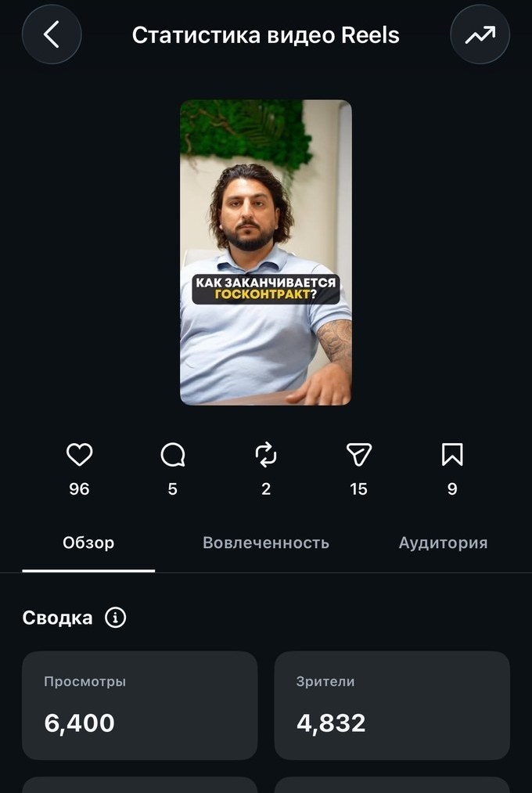
«Как заканчивается госконтракт» · 6 400
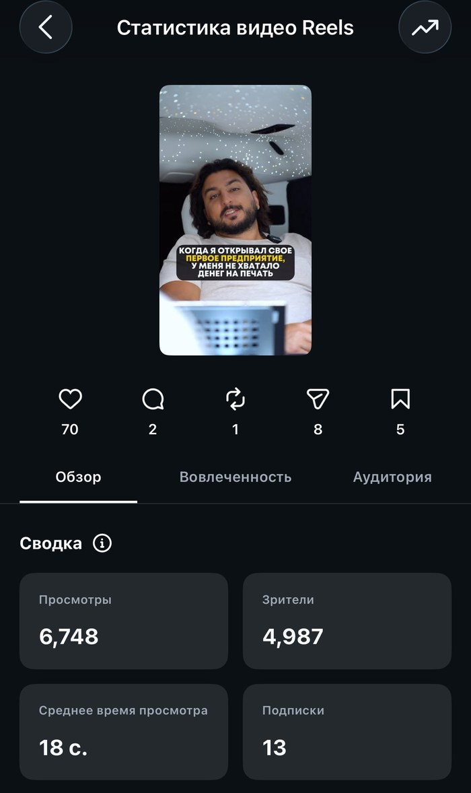
«Не хватало денег на печать» · 6 748
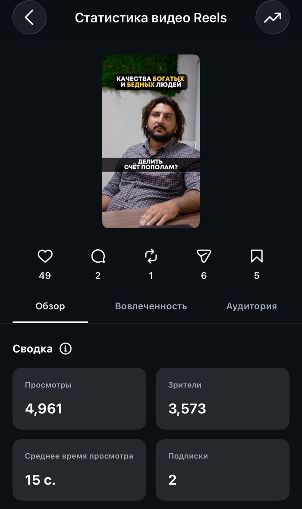
«Качества богатых и бедных людей» · 4 961
Вовлечение
Что аудитория делает с роликами
Посчитано вручную по статистике каждого из 80 роликов — не оценка, а сумма реальных цифр из Instagram.
9 647
раз ролики отправили в личных сообщениях
1 461
сохранение — чтобы вернуться позже
244
репоста в истории
10 069
отметок «Нравится»
1 294
комментария
22 715
взаимодействий суммарно по роликам
Главное здесь — 9 647 отправок в сообщениях. Это когда человек скидывает ролик знакомому: «смотри». В B2B-нише такая пересылка и есть настоящая рекомендация — и она же главный источник бесплатного охвата.
1 461 сохранение означает, что ролики смотрят как справочник: люди откладывают их, чтобы вернуться к теме позже.
Рекордсмен — «Лайфхаки в работе с госконтрактами»: 7,5 тыс. отправок, 621 сохранение, 95 репостов с одного ролика.
Статистика самого аккаунта за 90 дней показывает 29 946 взаимодействий — больше нашей суммы, потому что в неё не вошли ролики первого месяца и всё, что ролики добрали уже после снятия статистики.
Конверсия
Подписки приходят с каждого ролика
Строка «Подписки» — прямо из статистики Reels. Это не просмотры ради просмотров: человек смотрит ролик и остаётся в блоге. Скриншоты сняты 9 августа и 15 сентября — ролики с тех пор добрали ещё.
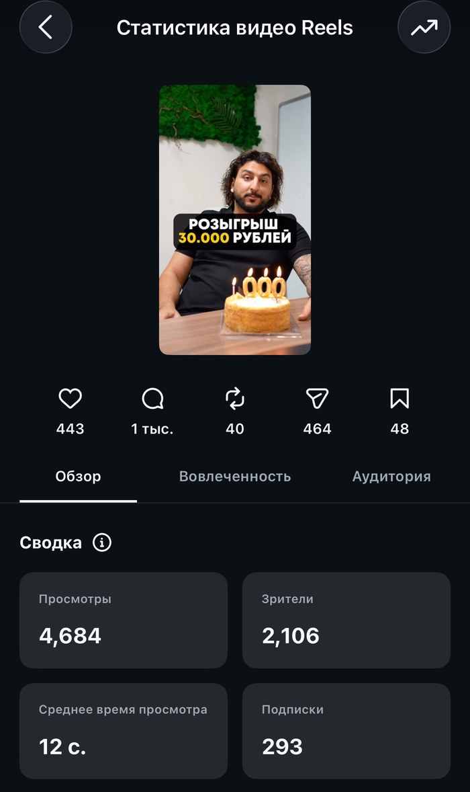
Розыгрыш · 4 684 просмотра · +293
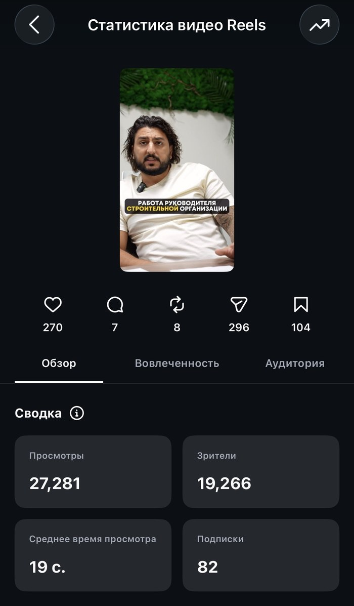
«Работа руководителя строительной организации» · +82
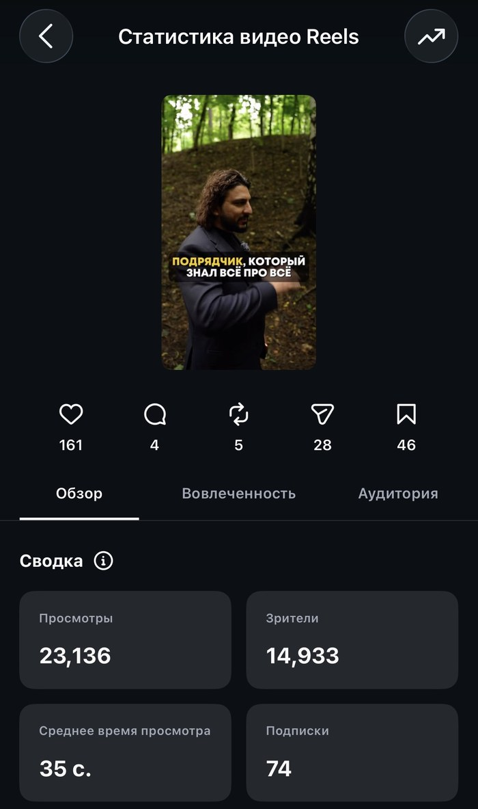
«Подрядчик, который знал всё про всё» · +74
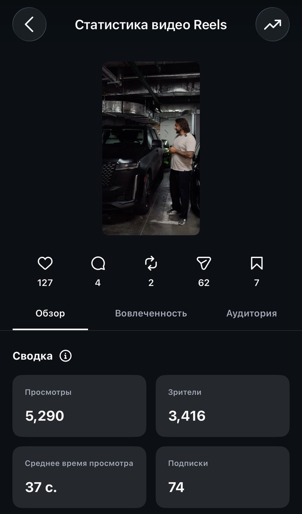
«День в офисе» · 5 290 просмотров · +74
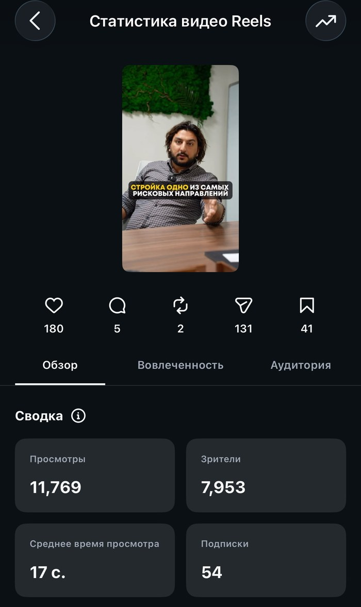
«Стройка — одно из рисковых направлений» · +54
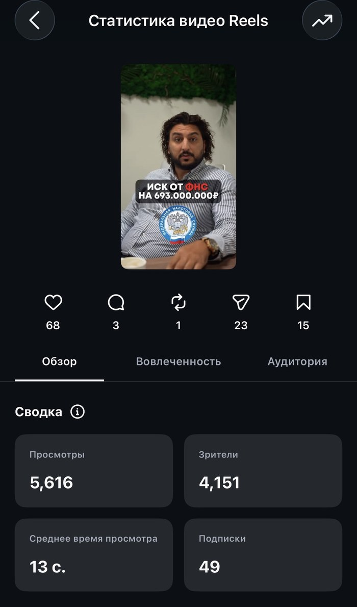
«Иск от ФНС» · +49
Рекорд — 413 подписчиков с одного ролика («Госконтракт на 500 млн», выше в разделе «Хиты»). Следом «Лайфхаки по госконтрактам» — 166 и «Первый контракт за миллиард» — 147.
Лучшая конверсия у розыгрыша: 4 684 просмотра и 293 подписки — подписывается каждый шестнадцатый зритель.
Подписки идут и с рядовых роликов: обычный рабочий ролик про подрядчика или день в офисе приводит по 70–80 человек.
Ролики продолжают приводить людей после публикации: «Лайфхаки» на конец второго месяца имели 28 подписок, сейчас — 166.
Аудитория
Пришли ровно те, кто был нужен
Задача была собрать мужчин-предпринимателей. Вот кто в итоге подписался.
Мужчины80,1%
Женщины19,9%
35–44 года45,7%
25–34 года32,2%
45–54 года14,5%
18–24 года3,4%
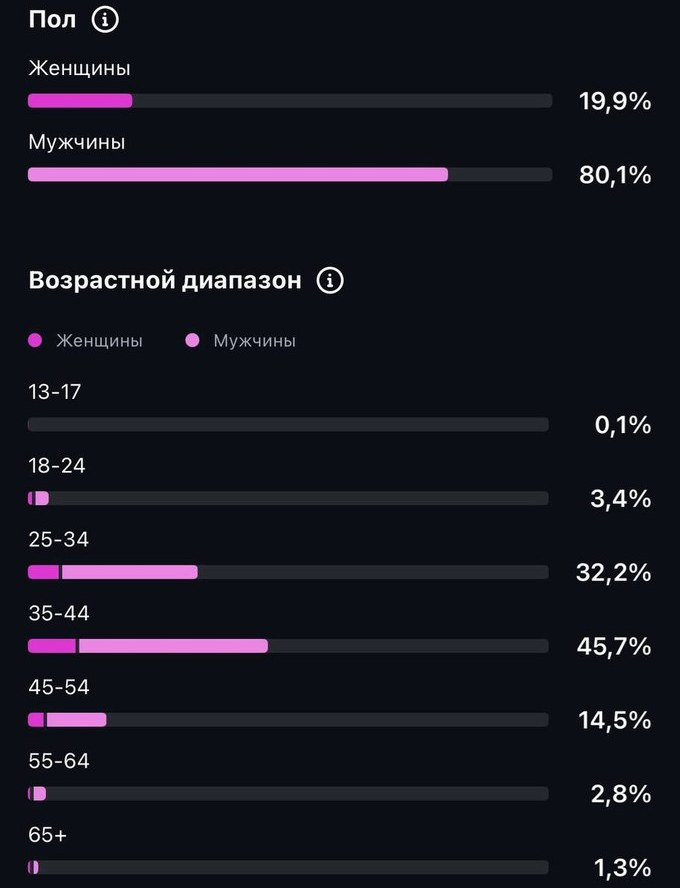
92,4% аудитории — мужчины и женщины 25–54 лет, то есть люди в активном рабочем возрасте. Это не развлекательный трафик.
Подписывается отрасль. В списке новых подписчиков — строительные компании, проектные бюро, производители материалов, застройщики, риелторы.
Это не «лайки и охваты». Это реальные запросы, которые приходят в личные сообщения от людей, посмотревших ролики. Ники и аватарки скрыты.
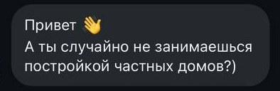
Запрос на подряд
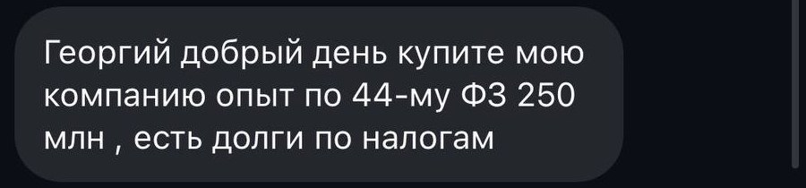
Предложение купить компанию с опытом по 44-ФЗ
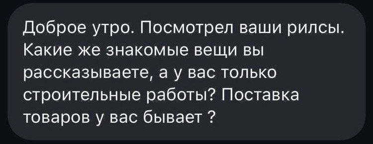
Запрос на поставку — от блогера с 47 тыс. подписчиков
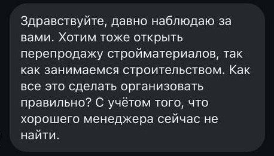
Обращение за опытом от коллег по рынку
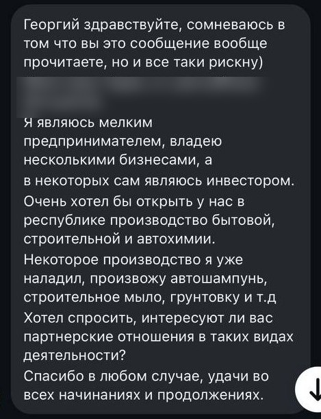
Предложение о партнёрстве — от предпринимателя и инвестора из другого региона
За три месяца блог стал каналом входящих. Подряды, поставки, партнёрства и даже предложение продать бизнес — всё это пришло от людей, которые просто увидели ролики.
228 человек перешли по ссылке из блога на сайт компании за последние 90 дней.
В нише, где принято работать по связям, блог открыл второй канал знакомств — без встреч, звонков и рекомендаций.
Реакция клиента
Как это выглядит изнутри работы
Реакции Георгия на материалы — просто переписка по ходу проекта.
“
Круто!) делаем)
Георгий, по ходу работы
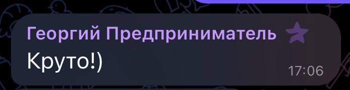
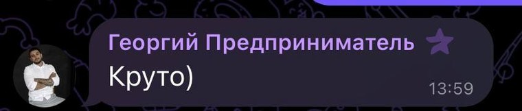
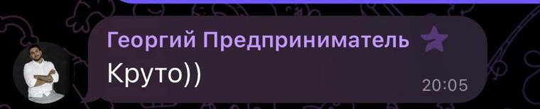
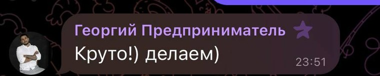
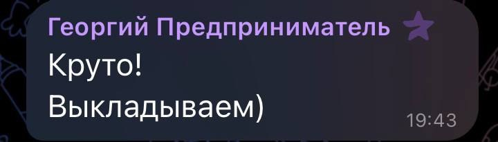
Работа со мной
Как я могу помочь Вам выстроить блог
Начинаем всегда одинаково: с аудита. Без него не берусь — сначала нужно понять, что происходит с Вашим блогом сейчас.
Формат 1
Сопровождение
Месяц работы над блогом вместе: стратегия, темы, форматы, съёмки, публикации, отчёт по цифрам.
от 130 000 ₽
Формат 2
Личная работа
Выстраиваем личный бренд полностью: от позиционирования до системы производства контента и результата в бизнесе.
от 300 000 ₽
С чего начинаем
Аудит блога
Разбор того, что происходит сейчас, и дорожная карта. Засчитываю в стоимость, если после аудита продолжаем работу.
20 000 ₽
Что входит в аудит
20 000 ₽
Глубокий анализ того, что сейчас происходит с Вашим блогом
Что бы я делал на Вашем месте: видение и конкретные шаги
Дорожная карта развития
План возможной совместной работы
Что нужно от Вас: ссылка на Instagram и скриншоты статистики профиля. Результат: через 3 дня — документ с разбором и созвон, на котором мы по нему пройдёмся.